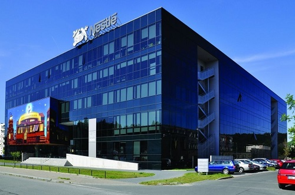

O nás
Profil firmy
Naše firma H2O s.r.o. působí na českém trhu od roku 2002. Navázali jsme na obchodní aktivity firmy Seba s.r.o., která nabízela na českém trhu podobný sortiment výrobků již od první poloviny devadesátých let. Zahraniční vlastníci společnosti se rozhodli soustředit se pouze na jejich domácí trh v Polské republice. Celosvětový trend v oblasti pitné vody jednoznačně směřuje k tzv. „ point-of-use“ přístrojům pro přímou úpravu pitné vody z vodovodního řadu. Mnoho firem ročně ušetří nezanedbatelné náklady. Nemusí objednávat stále novou balenou vodu, odpadá skladování, manipulace, doprava i další úkony. Bohužel, kvalita balené vody bývá často velmi proměnlivá. Výjimečný design stejně jako minimální provozní náklady jen potvrzují postupné zvyšování zájmu zákazníků o tuto techniku.
Naším cílem je uspokojování veškerých potřeb a přání svých zákazníků za předpokladu minimalizování investičních i provozních nákladů a dodržení vysoké úrovně kvality. Kvalita poskytovaných produktů a služeb je pro nás jednou z největších priorit. Nenabízíme nejlevnější řešení, nabízíme kvalitní řešení. Pokud hledáte z krátkodobého pohledu nejlevnější řešení, obraťte se na konkurenci, pokud však hledáte kvalitní a z dlouhodobého hlediska úsporné řešení, jsme tu právě pro Vás.
Naše komplexní řešení zahrnuje:
- konzultace
- nabídka nejvhodnějšího typu přístroje podle konkrétních potřeb zákazníka
- bezplatná zkouška přístroje na dobu 5 - 10 pracovních dnů
- prodej nových přístrojů
- prodej repasovaných přístrojů za výhodné ceny
- pronájem vybraných typů přístrojů
- instalace
- pravidelný záruční i pozáruční servis
- odpojení a převoz přístrojů v případě stěhování
- odkup přístrojů, pro které nemá zákazník využití
Historie firmy
2002
- Založení firmy
- Spolupráce s Waterlogic International
- Dne 27. 3. 2002 byla firma H2O s.r.o. zapsána do obchodního rejstříku vedeného Městským soudem v Praze.
- Stěhování stěhování firmy z Prahy 3 - Žižkov na Prahu 8 - Karlín.
- Dodávka přístrojů na vodu do nového sídla Raiffeisenbank.
- Exkluzivní zastoupení Tana Industries
- Spolupráce s vendingovou firmou Delikomat
- Spolupráce s vendingovou firmou Š&Sch
- Dodávka přístrojů na vodu Tana Water Českým Aeroliniím
- Spolupráce s vendingovou firmou Sielaff Bohemia
- Dodávka přístrojů na vodu dalším významným zákazníkům
- Dodávka přístrojů na vodu do nových sídel Cetelem a Nestlé Česko. 
- Dodávka přístrojů na vodu na centrálu UNIQA Pojišťovna.
- Spolupráce s vendingovou firmou Lumo Plus.
- Dodávka přístrojů na vodu do nového sídla ČEZ
- Návštěva veletrhu Aquatech v Amsterdamu.
- Dodávka přístrojů na vodu do centrály Raiffeisen stavební spořitelny
- Dodávka přístrojů na vodu do nového sídla pojišťovny Axa Assistance
- Dodávka přístrojů na vodu do nového sídla JNJ Global Business Services
- Dodávka přístrojů na vodu do nové budovy energetické společnosti RWE
- Návštěva výstavy Evropské asociace výrobců přístrojů pro výdej pitné vody v Praze v hotelu Intercontinental.
- Další dodávky přístrojů na vodu do firem - PPL CZ, B. Braun Medical, L’OREAL, Nestlé a také pobočku firmy CETELEM v Brně.
- Dodávky přístrojů dalším novým zákazníkům - ŠKODA AUTO, Young and Rubicam, LLP Prague.
- Spolupráce s vendingovou firmou Cafeomega
Po společnosti Seba s.r.o. zde zůstávají přístroje u několika firem jako Nestlé Česko, TRW Autoelektronika atd. Tyto firmy nás kontaktují a stávají se našimi prvními zákazníky.
2003


2004
2005
Mezi ně patří např. Beneficial Finance, Karneval Media, Volvo Truck Czech a Raiffeisen stavební spořitelna.
2006
2007
2008
2009
2010
2011
2012
2013